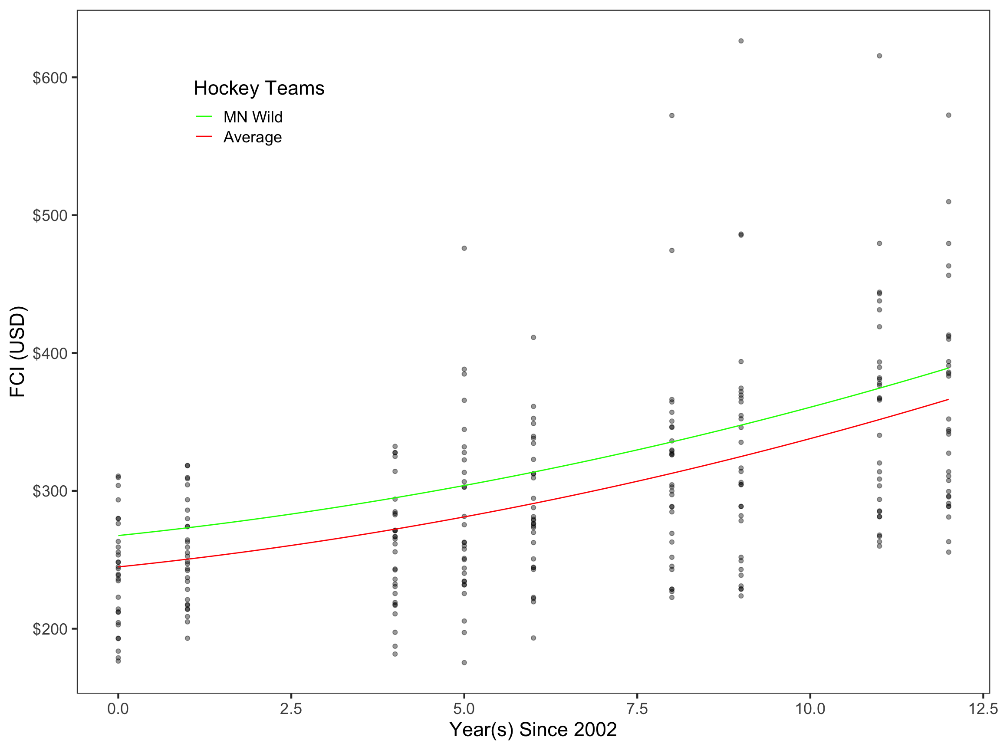

Fan Cost Index of NHL Games
This project assesses the longitudinal variation in cost of attending an NHL game from 2002-2014. We will utilize each team’s fan cost index (FCI) for a particular a season, although there is no data from 2012 because the NHL experienced a lockout. FCI is calculated by summing the prices of four average-price tickets, two small draft beers, four small soft drinks, four regular-size hot dogs, parking for one car, two game programs, and two least-expensive, adult-size adjustable caps, for a season. Here is a figure displaying the relationship between FCI and years since 2002 for each team and an average growth trendline displayed in bold.
The average growth model appears to be positive and linear, although there may be evidence supporting a quadratic relationship in the data. We will consider three models in our analysis: a) an uncondiational random intercepts model; b) an unconditional linear growth model; and c) an unconditional quadratic growth model. Here is a table of the unstandardized coefficients and standard errors for these models.
Table 1. Unstandardized Coefficients & Confidence Errors for a Series of LMER Models Fitted to Estimate FCI of NHL Games
=====================================================================================
Model A Model B Model C
Team 10.138 5.205
(8.867, 11.408) (0.847, 9.564)
Year 0.413
(0.064, 0.763)
Year(Squared) 299.881 236.580 244.821
(281.121, 318.642) (216.925, 256.235) (224.052, 265.590)
-------------------------------------------------------------------------------------
Level-2 Variance (Intercept) 2428.05 2398.24 2385.28
Level-1 Variance 3478.38 1727.95 1691.46
AICc 3034.34 2866.48 2863.25
=====================================================================================
Model C has the lowest AICc, which means it has the most empirical support of any of the three. While both variation between and within teams exist, the variation between teams (58.50%) accounts for more variation than the variation within team (41.50%). In practical terms, this means that a team’s FCI in 2002 (the y-intercept) explains more variation than the rate of change of a team’s FCI (slope). Here is the equation for this model:
\[ \begin{split} \hat{\mathrm{FCI}_{i}} &= 244.82+ 5.21(\mathrm{Year-2002}_{ij}) + 0.41(\mathrm{Year-2002}_{ij})^2 +\mathrm{b_{0j}} \end{split} \]
Additionally, here is a figure that presents our model as well as a trend line that represents the FCI for the Minnesota Wild NHL team.
